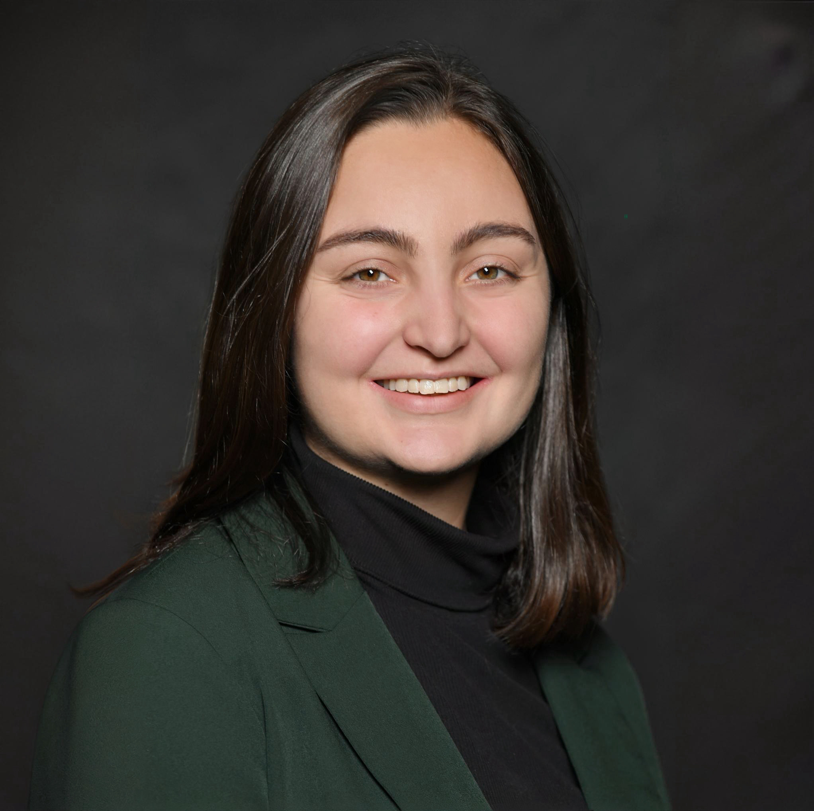

Biomedical Engineer
Long Island, NY
B.S. Biomedical Engineering
University of Rochester '25
Growing up using hearing aids, I became fascinated early on by the intersection of technology and medicine. In high school, I was equally drawn to the technical challenges of my math and science classes, and to the creative expression of art and music. When it came time to choose a career path, biomedical engineering was a natural fit; it presented an avenue through which I could direct both my technical skills and creative drive towards the singular goal of innovation that directly improves people's lives.
While earning my B.S. at the University of Rochester, I designed and ran experiments for two computational neuroscience labs and spent a summer at Boston University doing materials science research with a startup developing an electrochemical biosensor for multiple sclerosis. I'm currently interning with the Neural Bypass and Brain-Computer Interface Lab at the Feinstein Institutes for Medical Research, where I'm developing a computer vision and signal processing pipeline in Python to analyze stroke research data. Additional projects there have included CAD for 3D printing, soldering, debugging Arduino code, and neural data analysis in MATLAB. I'm actively seeking engineering roles in the healthcare and medical device industries, where I can contribute to impactful technologies while continuing to grow as an engineer.
Outside of engineering, I enjoy running, reading, music, and art, usually accompanied by my cat, Callie. Feel free to reach out and chat!
Manhasset, NY
Karches Neural Bypass and Brain Computer Interface Lab
March - June 2026
I am developing a computer vision and signal processing pipeline using Google MediaPipe to quantify changes in functional hand movement during an interventional study. I also design and 3D print circuit enclosures and components for functional task assessments using Fusion360, solder circuits, debug Arduino code in the Arduino IDE and in MATLAB, and contribute to neural data analysis in MATLAB. Throughout all of these projects, I maintain compliance with HIPAA and IRB standards for clinical research.
Rochester, NY
Computational Neuroscience of Audition Lab
March 2024 - May 2025
I assisted with development of a human subjects experiment investigating speech perception. This included creating the stimuli, running the experiment, and analyzing data. I ensured new procedures complied with institutional regulations and updated in-lab documentation as needed.
Department of Biomedical Engineering
February 2023 - May 2025
I was a Teaching Assistant for BME 210: Biosystems and Circuits, BME 230: Signals, Systems, and Imaging, and BME 221: Biomedical Computation and Statistics. I helped solve, created rubrics for, and graded homework and MATLAB-based computer lab assignments, in addition to assisting with practical labs and holding weekly office hours and workshops.
Auditory and Multisensory Processing Lab
October 2022 - December 2024
I assisted with behavioral and EEG experiments involving human subjects, which involved setting up the lab space before each session, walking the subject through the process of informed consent and ensuring their comfort throughout the experiment itself, troubleshooting issues with the Python experimental code and electronic equipment, and cleaning up, both independently or with other members of the lab. I also attended weekly lab meetings and supplementary research talks.
Boston, MA
NSF REU in Integrated Nanomanufacturing
StataDX
June - August 2023
I worked with a startup developing a point-of-care device for detecting biomarkers of multiple sclerosis. My project involved introducing magnetic nanoparticles into the existing biosensor in order to enhance its sensitivity. After performing a literature review, I ideated a design for an improved system, implementing feedback from my mentor and others in the lab. This project involved numerous wet lab techniques, as well as computational analysis in Python and CAD design in SolidWorks. At the end of the summer, I designed a poster and presented it at a capstone poster session to researchers from various departments.
Rochester, NY
B.S. with Highest Distinction in Biomedical Engineering
Concentration in Biosignals and Biosystems
Minor in Music Cognition
GPA: 3.86/4.00
Rocky Point, NY
Feinstein Institutes for
Medical Research
University of Rochester
(BME 296: Senior Capstone)
Feinstein Institutes for
Medical Research
Boston University
Photonics Center
University of Rochester
(ECE 277: Computer Audition)